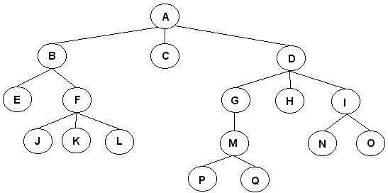
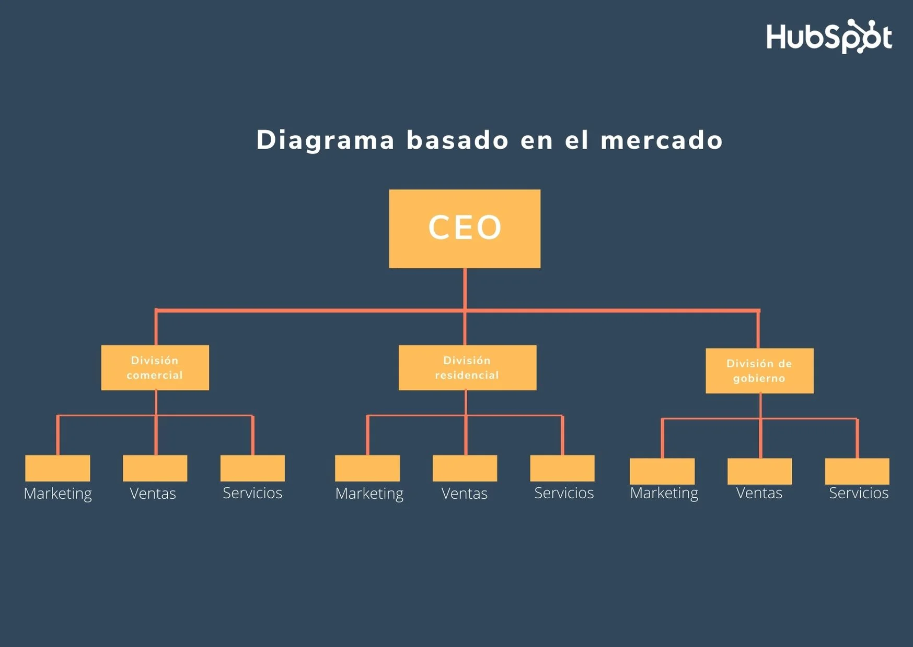

La recursividad es un concepto en programación (y también en matemáticas) que implica que una función se llama a sí misma dentro de su definición. En términos simples, es como una regla que se aplica repetidamente a sí misma. Imagina que estás en un laberinto y necesitas salir. La recursividad sería como seguir las instrucciones que te dicen "para salir del laberinto, sigue las instrucciones para salir del laberinto". Así, te encuentras siguiendo las mismas instrucciones una y otra vez hasta que finalmente sales. En la vida diaria, aunque no lo notes, la recursividad se puede encontrar en diversas situaciones. Aquí tienes tres ejemplos:
Procesamiento de datos en árboles o listas
Imagina que tienes una lista de tareas por hacer y cada tarea tiene sub-tareas. Para resolver todas las tareas, necesitas resolver primero las sub-tareas. La recursividad se puede usar aquí para abordar cada sub-tarea hasta que todas estén completadas.

Estructuras de organización
En una empresa, puede haber jerarquías de gestión. Por ejemplo, un director supervisa a varios gerentes, y cada gerente puede supervisar a varios empleados. La recursividad se puede aplicar al seguir la cadena de mando hasta llegar al nivel más bajo de la organización.
